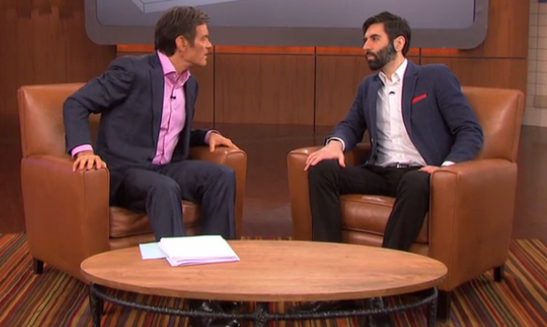

< < < Back
3 Ways To Cultivate The Discipline Of A Neomasculine Lifestyle – Return Of Kings
While some men have to work less at their goals because of innate talents and abilities they were born with, work is a significant equalizer that allows one born with a lower stock to raise himself up to those men born above him.
— Roosh on the hard work ethic intrinsic to being a neomasculine man.
All men can achieve great things, but few men do. Why? They lack the discipline to work hard, challenge and then eliminate their fears, and constantly extricate themselves from the always present contagion of personal complacency. It is a good bet that most ROK readers will not go further than a week or two in applying the kinds of measures I will describe here to increase and consolidate their discipline. Even amongst self-described neomasculinists, the red pillers of the red pillers, the majority will fall short, indeed far short of the mark.
You must treat your life like that of a professional athlete. The difference is, though, that you’re your own coach as well. And your life extends well beyond the domain of sports. Your life is your discipline and how you apply it in all facets of your life. Consider your neomasculine beliefs as the rocket and your discipline as the fuel. Use the following three strategies (and adapt your own) to ensure that the ideology you know and love on ROK isn’t just a pipe dream you live out on the internet several times a week. You must live what you support, not passively read it.
1. Write down what you do… every day
You need hard, documentary evidence of what you do in life, not selective and deceptively rosy recollections in your mind.
People regularly convince themselves that they did a lot more than they did in reality. Men will say they went to the gym, forgetting the five or ten minute intervals each and every time between different machines or weight stations. They’ll mentally cast aside that the dumbbells they use feel more like doing an aerobics class than an attempt to add size and mass. Or they’ll ignore entirely how they should be writing down their weights, sets and repetitions for each exercise without fail.
It is your job to get yourself a sturdy notebook (to survive being used across your many neomasculine activities) to record your pursuits, successes and, yes, setbacks. If you went to the gym, were you training like a teenage girl in spandex or like a prospective Arnie? There’s a difference. Likewise, in your studies or career, did you push yourself? And for how long? Instead of just punching in your hours, did you work towards something bigger and longer-term?
At the end of every week, your aim is to have a list of activities across seven days that demonstrate you are dedicated to a never-ending use of your masculine energies. Of course, rest and relaxation are an integral part of this masculinity, so do not forget it. Yet the biggest problem for men is a lack of hard or sustained work, not an absence of idle time.
The litmus test for whether you are doing enough is to imagine that a friend with similar interests shows you the same list of things they did in a week. Would it impress you? If not, you need to do more (and be recording it).
2. Turn positive, conscious actions into easy, unconscious habits
So long as your habits serve you, there’s nothing wrong with cultivating automatic behaviors and programming.
One of my favorite routines is heading to the gym at almost always the same time. Urgent work and travel commitments obviously change things from time to time, but by and large I am always going to the gym in the same three hour block of time, aside from my rest days.
As my obligations change across the year, sometimes I substitute mid-morning sessions for what used to be evening ones. Nonetheless, the general consistency I maintain makes going to the gym simple and close to addictive. My neural pathways are basically geared to being at the gym at a particular time. Instead of casual willpower dictating things, habitual programming does it for me.
In a sense, habits take you beyond discipline to more automatic behavior. The trick, though, is applying the discipline at the very beginning, when a habit is still to be formed. If your goal is to learn a language, try my habit of choice: practicing your language with a simple computer program or application every morning, immediately after you wake up. It is not unusual for me to practice for 20 to 30 days in a row before I miss one (and I know this because I record what I do, which takes only five minutes cumulatively per day).
There are simple techniques for you to harness this principle. For example, I had iPhone and iPod alarm reminders set for five minutes after my wake-up alarm (“Practise Russian and Italian for 10 minutes each.”) until I no longer needed them. To make sure I kept my gym program going, I asked three friends to question me about how many times I was going to the gym every week (illustrating the power of social circles in achieving your goals).
How you program yourself is your prerogative, but there’s no excuse for not being programmed. It’s effectively a cheating form of discipline because your unconscious brain handles most of the work.
3. Make a $1,000 bet or just burn your goddamned bridges
You’d burn your bridges with a terrible girl, so do the same for any mediocre parts of your life. Aim for glory.
I regularly bet my friends or girls that I will do something when they say I won’t or can’t. It brings out my most competitive spirit and it should do the same for yours. Ideally, life is a competition with yourself so you can then outcompete others. Nevertheless, sometimes you need to jostle your ego somewhat and make it a winner-takes-all battle with someone else.
Often the bet is just for pride, although putting money on the table can be an intense motivator, especially if the wager is one-way (i.e. if you win, you get nothing and if you lose, the other person gets the cash). Of the 50 or so two-way bets I have made like this over the past few years, where the sums were on average about $50, I have lost just two or three.
Another way is to simply make a promise to someone, indicating you’re putting all your chips on the table and that a failure to accomplish something would mean a humiliation or a lowering of someone’s perception of you. Too many men presume they can immediately self-actualize and drive themselves based on personal willpower and desire alone. That is certainly conceivable, albeit unlikely for the majority of men with flabby discipline muscles.
Burning your bridges in a responsible way (preferably without second mortgaging your home!) harnesses your primal, simian fear of being embarrassed. You urge yourself onto more when you know others are watching.
For those who believe this is a shortcut to discipline, consider the case of the triple Olympic gold medalist in the 100 metres dash, Usain Bolt. Although undoubtedly self-motivated, Bolt’s performances are furthered by a pack of capable sprinters always just behind him when he wins, literally by mere milliseconds.
Would Bolt be training harder, aiming for better and better times, if his closest competitors took between 10.5 and 11 seconds to race and not under 10? Of course not. Bolt’s version of burning his bridges is that each and every time he competes, others are watching. If the 100 metre Olympic champion fails, everyone knows. It is more than healthy to be competing with a combination of both yourself and others.
Do you dare to have the audacity of Roosh?

Have the balls to face down your own life like Roosh faces down SJWs.
What you now know as neomasculinity did not simply start in someone’s mind, it was lived out in reality. As we saw in the vitriolic, hateful attacks on Roosh in Canada this year, it is possible to not only pursue a proud form of masculinity, but to wear it as a badge of honor as the most powerful and vested interests attack it. Compared to those like Roosh who are publicly lambasted for promoting healthy forms of masculinity, your challenges are mostly a walk in the park.
Your attitude and the way you conduct yourself must be unapologetic in your own life, just as Roosh is unapologetic in the public sphere. You have a short few decades to make a mark on yourself and the world. So seize it. Start today. What you achieve in the next day or six months may fade into time. The discipline you commit yourself to will not fade, however, if you choose to keep it.
Talk is cheap and neomasculinity demands discipline. So have you got what it takes or are you just a pretender?
Read More: The Application Of Spirituality In A Neomasculine Lifestyle